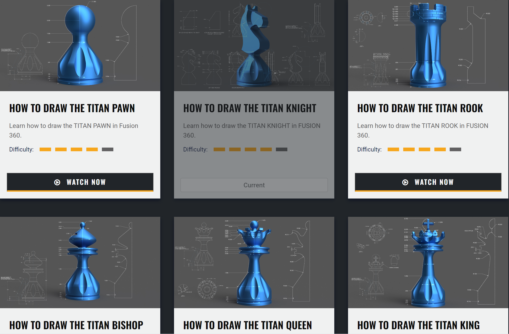
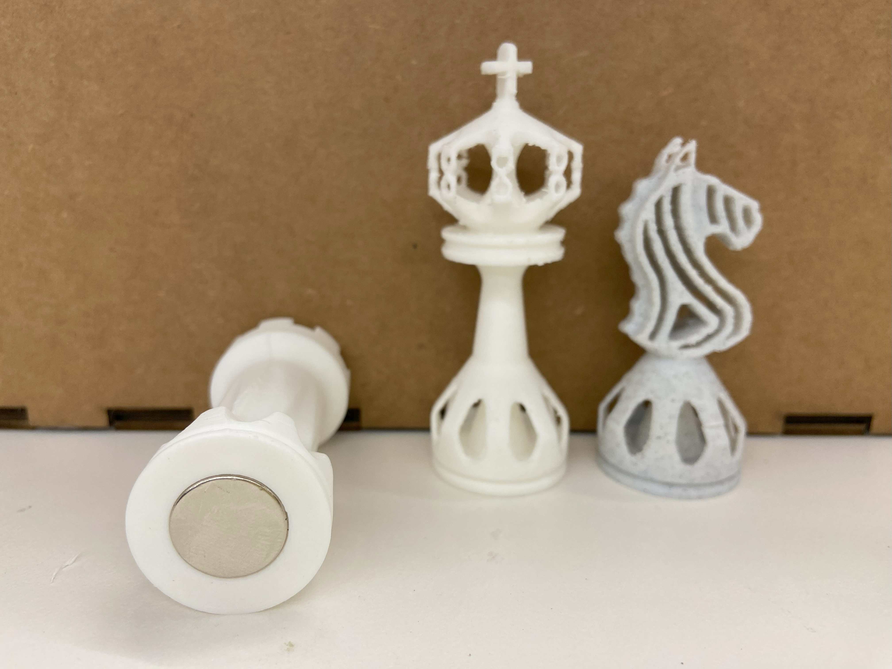
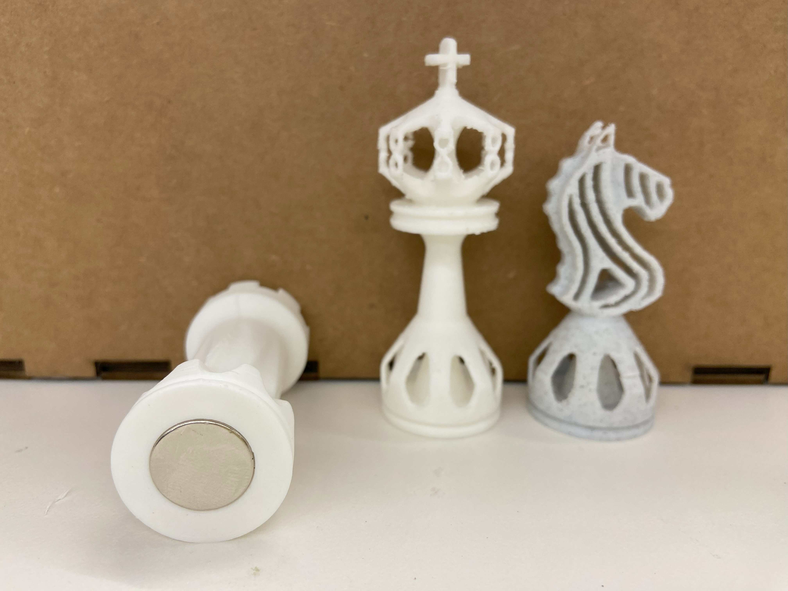
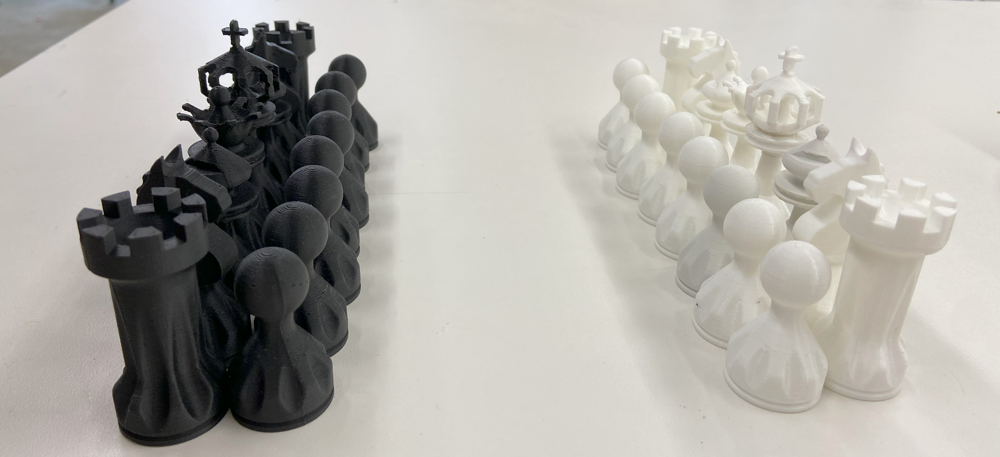
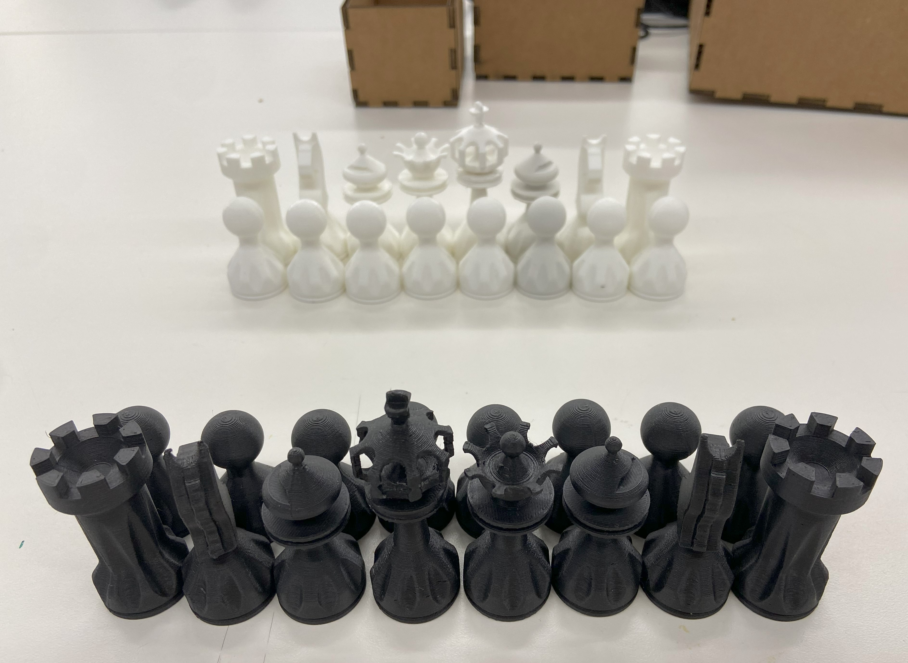
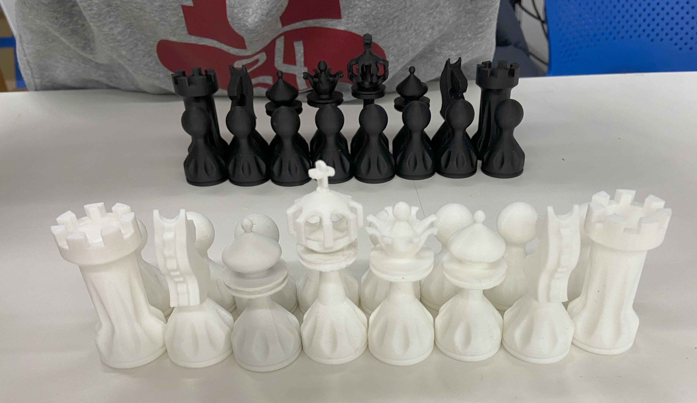
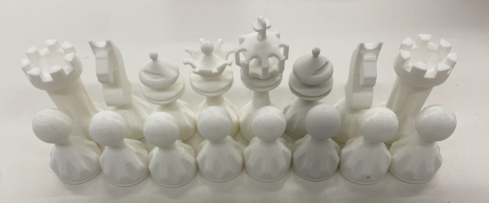
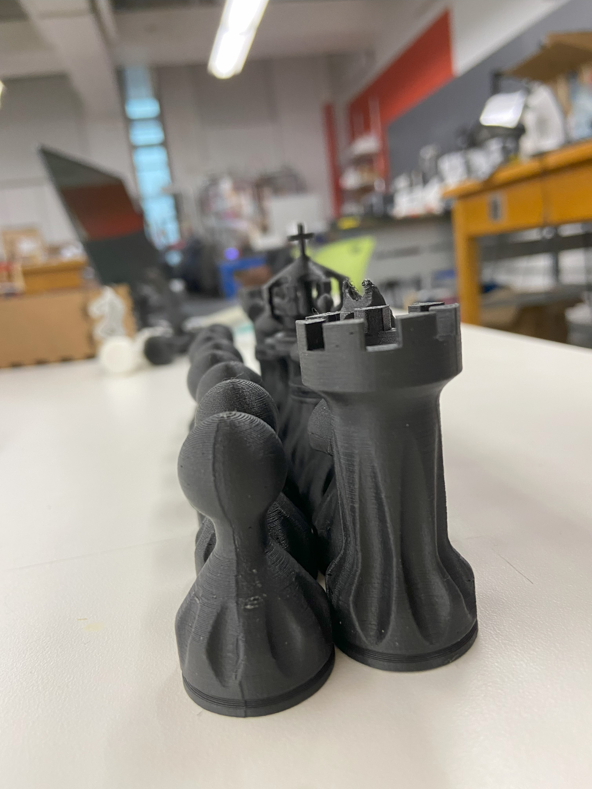
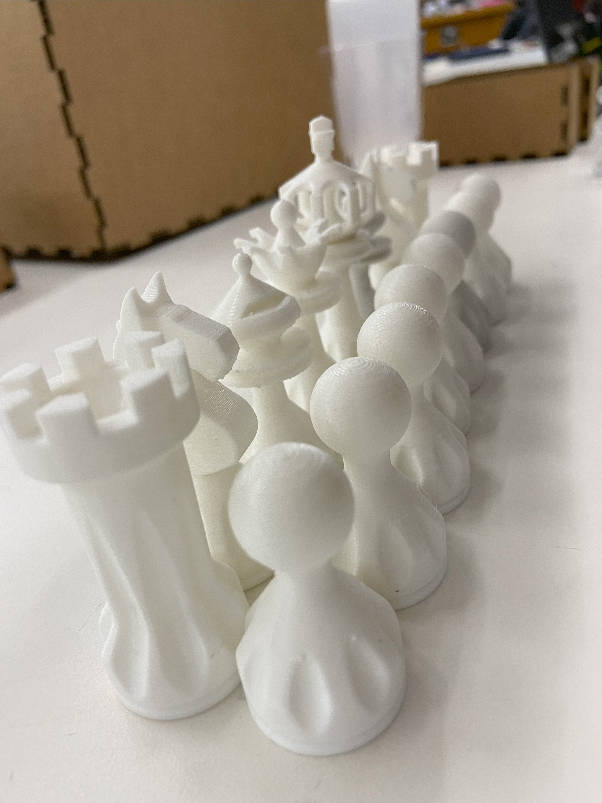
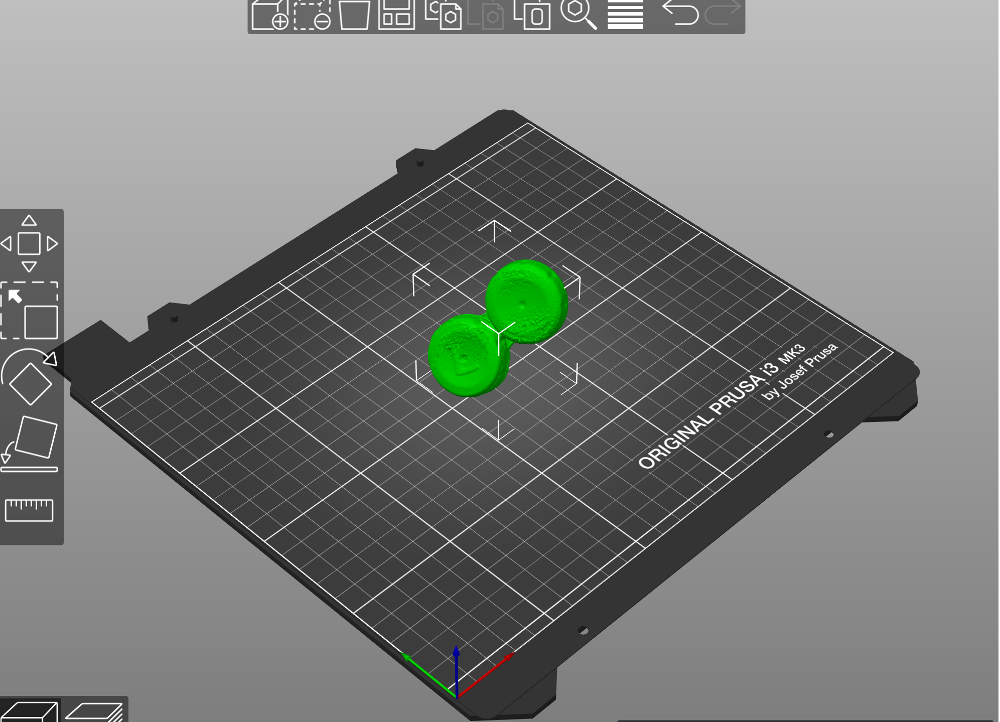

3D PRINTING!
During lab I 3D printed a mini-sized chess piece (tower) and from evolved the idea to design a Chess Set (travel) with magnets. I soon figured the horse piece would be the hardest because I wouldn't be able to use revolve methods like with all the other pieces. After trying it myself and failing I started searching online and found a really cool website with videos and blueprints: Titans of CNC.
The website only allows you to watch a video once (unless you use another browser/delete your history). However, after a while I got the gist of it and the blueprints were very helpful. I also started to modify the design and make it my own where I saw fit.
The designs on the Titans of CNC website:
My fusion 360 Designs:
The tower from lab that inspired the idea of making chess pieces:
My first attempt at making the horse piece:
First attempts for the pawn and the bishop:
Now the pretty ones!!!
Horse:
Queen:
King:
Tower:
Queen:
Pawn:
Download my stl files:
3D printed result: Horse, King, Tower
For the G slicing I decrease the scale of my models to 70% because I didn't want them to be so big.
For the 3D printing I first had to figure out how to fit the magnet. If I would use the measurements I took with the caliper the hole for the magnet, the hole would be too small. After trial and error with a small test piece I figured out that I had to make the hole 0.4mm bigger and 0.2mm higher. They ended up fitting so well that they would stay put without glue. However, if I want to use them I'll have to glue them, because else the magnet will just be pulled out of the hole.
Another "issue" I ran into is that it took an awful long time to remove all the supportive material. Furthermore, some parts were so thin that during the removal process they broke:/
3D printed horse, king and tower chess pieces.
 The 3D printed pieces with support material removed.

3D printed pieces with magnet on the bottom.
The 3D printed pieces with support material removed.

3D printed pieces with magnet on the bottom.
 The magnets fit really well.
The magnets fit really well.
UPDATE ON THE CHESS PIECES (4/4/2024):
Photos! But also check out the chocolate chess pieces of Week 8




 
Photogrammetry:
I scanned my contacts box using the Revopoint 3D scanner. Download stl file FINAL PROJECT UPDATE:
Some helpful and useful webpages and videos:
- Growth chamber with moisture sensors and watering system by Jamesbardin15
- Arduino controlled growth chamber that allows control of differen environmental factors (temperature, humidity, light) by Antonion Ruiz
- Videos on which light source to use for indoor plant growth by SSLFamilyDad and by AlboPepper - Drought Proof Urban Gardening and by Pretty in Green
- Hydroponic garden: 5 methods by Christina D'Anna
Raspberry Pi examples:
Bill of materials:
- (Grow) light LED strips
- Moisture Sensor
- Temperature and Humidity sensor; DHT20
- Peristaltic Pump
- Silicone tubbing for pump
- Arduino
- Breadboard
- Wiring